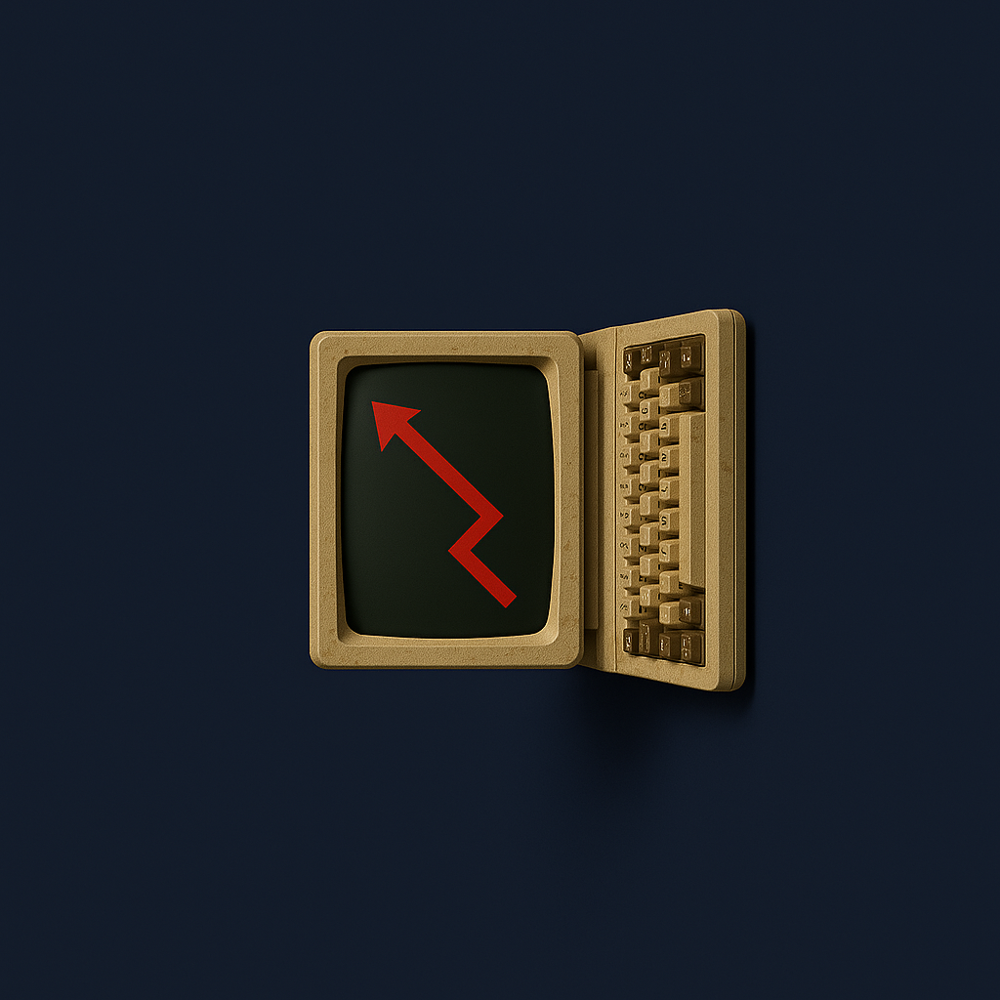

Baucoup de gens croient qu'une fois que leur ordinateur ne fonctione plus, ils pense que l'ordinateur ne fonctionne plus jamais et ne marche plus jamais surtout s'il n'essayent pas de le faire fonctionner. Hors grace a NIRD les ordinateur ont une seconde vie.
ça sera simple